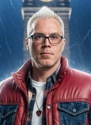

Kiszlo.Studio
Karol Kiszło
Założyciel i Strateg Kreatywny
Strateg, wizjoner i operator. Łączy świat kreatywnej komunikacji z najnowszymi technologiami VR, AI i produkcją wideo na poziomie premium. Założyciel Kiszlo.Studio, odpowiedzialny za kierunek kreatywny, strategię klientów i finalną jakość projektów.